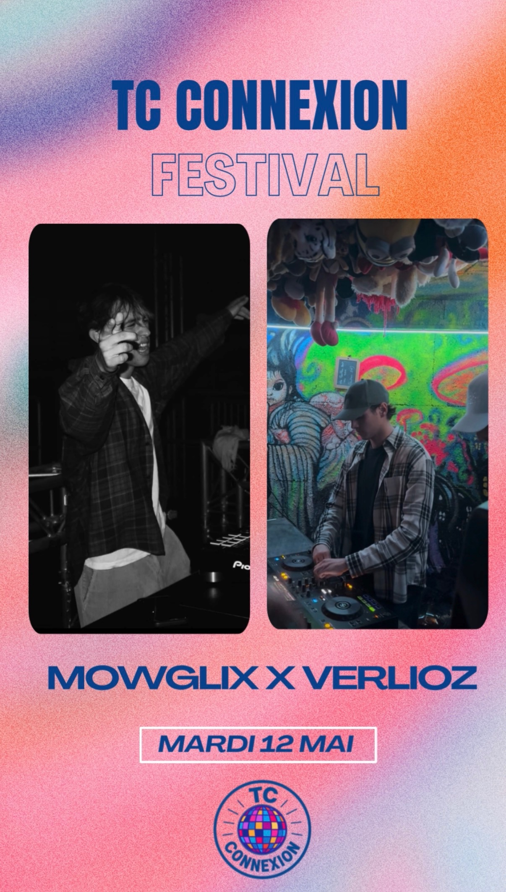
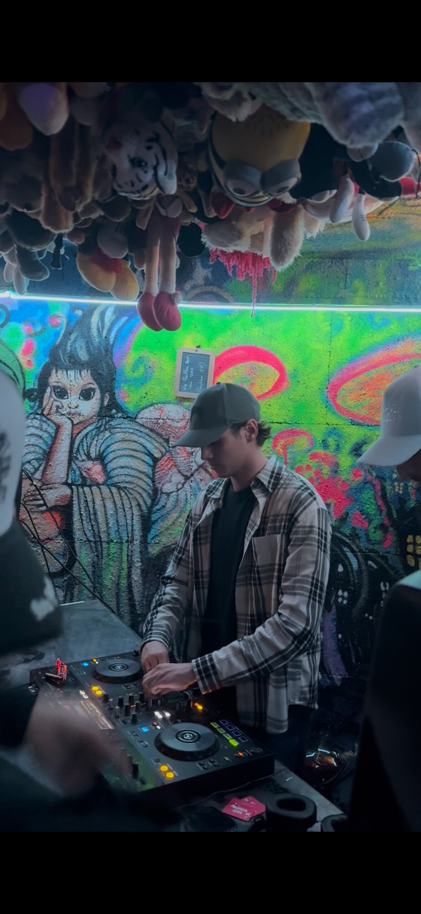
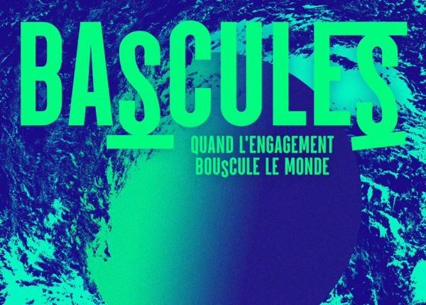

3 leçons apprises lors de mon stage à Bali 🏄
Partir à l'autre bout du monde pour un stage, c'est sortir de sa zone de confort. Voici ce que 2 mois au White Monkey Surf Shop m'ont appris sur la communication digitale et sur moi-même…
Les événements à dimension culturelle auxquels j'ai participé en BUT2 et leur impact sur mon projet professionnel.



Ces expériences m'ont aidé à affiner ma représentation du monde professionnel en marketing digital. J'ai compris que ce secteur est à la fois très technique (data, outils) et profondément humain (storytelling, authenticité, culture de marque).
Le projet Verlioz et TC Connexion m'ont montré que construire une identité, ça se travaille — avec de la constance, de la créativité et une vraie connaissance de son audience.
Ces trois expériences — la musique avec Verlioz, l'événementiel TC et la rencontre d'entrepreneurs engagés au festival Bascule(s) — forment une vision cohérente : communiquer avec authenticité, intention et engagement.
5 posts créés pour alimenter mon profil LinkedIn avec des contenus variés et à valeur ajoutée.